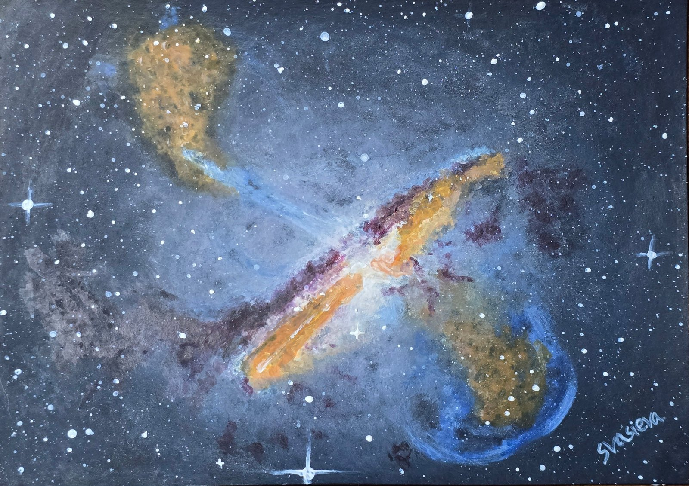

Centaurus A
Watercolour interpretation of Centaurus A, the fifth-brightest galaxy in the sky.
This galaxy ejects a powerful relativistic jet, whose inner parts are moving at roughly half the speed of light.

Watercolour interpretation of Centaurus A, the fifth-brightest galaxy in the sky.
This galaxy ejects a powerful relativistic jet, whose inner parts are moving at roughly half the speed of light.